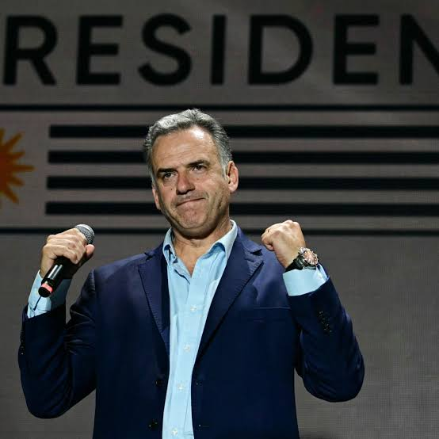

Posible gobierno Bolsonaro en Brasil
El gobierno de Yamandú Orsi comenzó a analizar los posibles efectos políticos y comerciales que tendría para Uruguay un cambio de signo en Brasil después de que Flávio Bolsonaro terminara primero en la primera vuelta presidencial y avanzara al balotaje contra Luiz Inácio Lula da Silva.Según informó El País de Uruguay el 6 de octubre de 2026, fuentes del Ejecutivo señalaron que el resultado brasileño fue recibido con sorpresa y que ya existe interés por conocer quiénes podrían integrar un eventual gabinete de Bolsonaro, en particular quién quedaría al frente del Ministerio de Relaciones Exteriores brasileño.
o de los principales focos de atención del gobierno uruguayo es Itamaraty, como se conoce tradicionalmente a la Cancillería brasileña. La razón es práctica: Brasil posee un peso determinante en las negociaciones del Mercosur y cualquier modificación de su estrategia internacional repercute directamente sobre Uruguay, Argentina, Paraguay y Bolivia.